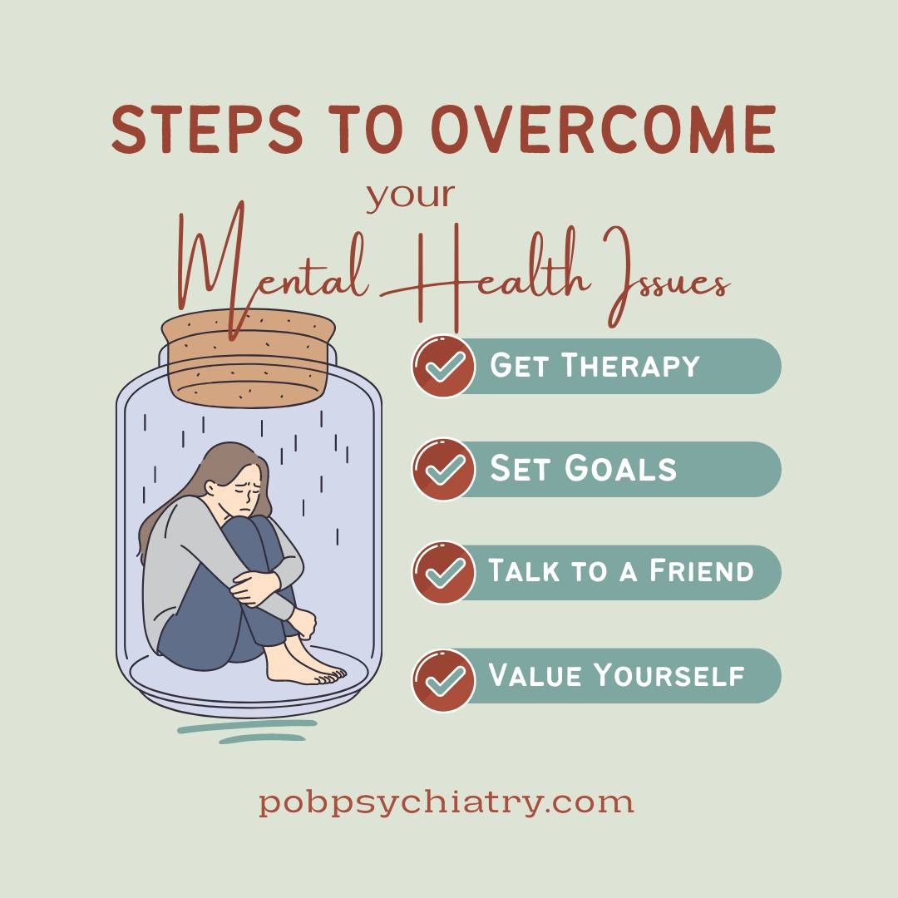

About Mental Health Support
Mental health is essential for overall well-being, and there's a growing need for accessible resources and support communities. The Mental Health Support Hub aims to provide a comprehensive platform offering resources, coping strategies, and a supportive community for individuals navigating mental health challenges.
Our platform fosters overall well-being by providing easily accessible and compassionate support to individuals dealing with a spectrum of mental health concerns, from everyday stress to more complex issues. We aim to address the diverse needs of our users, regardless of age, background, or level of mental health experience.
Impact!
-

Mental health support can transform lives, providing individuals with the tools and resources they need to thrive.
-

Access to mental health support can reduce stigma, improve overall well-being, and strengthen communities.
-

By offering compassionate support and understanding, mental health support services empower individuals to overcome challenges and live fulfilling lives.
-

From counseling and therapy to peer support groups and online resources, mental health support comes in many forms, catering to diverse needs and preferences.
Watch this video about We All Have Mental Health is an animation designed to give young people aged 11-14 a common language and understanding of what we mean by mental health and how we can look after it.
Sign Our Petition 📢
Help us advocate for better mental health support systems! Sign our petition now to make a difference.
🖊️ DJ from Brooklyn supports this.
🖊️ Amy from Queens supports this.
🖊️ Teresa from Harlem supports this.